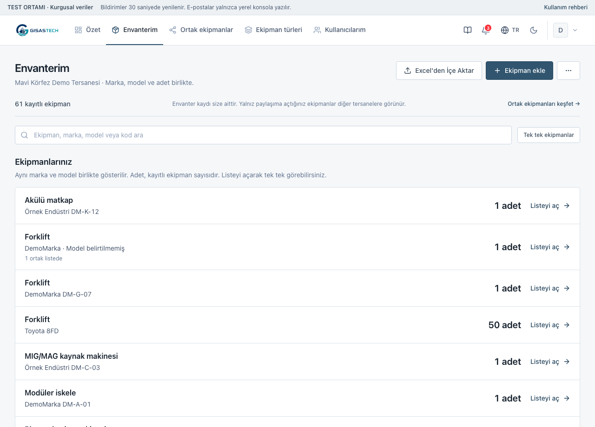
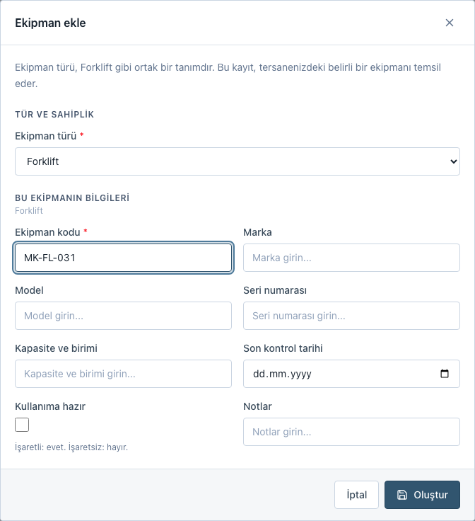
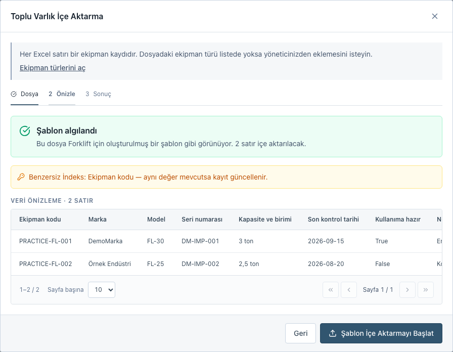
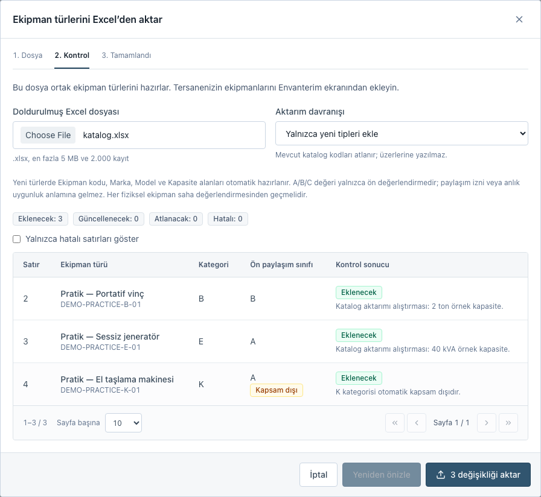

Envanterden ortak kullanıma,
adım adım.
Envanterinizi tek yerde düzenleyin. Diğer tersanelere açmak istediğiniz ekipmanı ayrıca seçin. Aşağıdan yapacağınız işlemi bulun; ekranın hangi düğmesinden başlayacağınızı ve sonuçta ne göreceğinizi izleyin.
- Model ve adet
- Forklift gibi tek tek izlenen ekipmanlar marka/modelle gösterilir. 50 adet, 50 ayrı kayıttır.
- Tek tek ekipmanlar
- Listeyi açın. Her ekipmanın kendi kodunu, bilgilerini ve paylaşım durumunu görün.
- Adetli malzeme stoku
- İskele parçaları ad, kod ve stok adediyle gösterilir. Binlerce parça tek kayıtta tutulabilir.
Görseller kurmaca demo verileriyle hazırlanmıştır. Görseli seçerek tam boy açabilirsiniz.
Eşleşen bölüm bulunamadı
“Excel”, “Forklift” veya “Paylaşımı yönet” gibi bir işlem ya da düğme adı deneyin.
Önce modeli ve adedi, sonra ekipmanları görün
Envanterim, aynı marka ve modeldeki ekipmanları birlikte gösterir. Örneğin aynı modelden 50 forkliftiniz varsa 50 adet görürsünüz; Listeyi aç ile bu 50 kaydı tek tek inceleyebilirsiniz.
Kim kullanır? Tersane yöneticisi ve personel.
Başlangıç: Envanterim
- Envanterim ekranını açın.
Marka, model ve toplam adedi görün. Modeli eksik kayıtlar Model belirtilmemiş grubundadır.
- İlgili modelde Listeyi aç seçin.
Açılan listede her satır bir ekipmandır. Belirli bir kayıt için arama alanına marka, model veya ekipman kodu yazın. Uzun listelerde alttaki sayfa numaraları veya Önceki / Sonraki düğmeleriyle ilerleyin. Sayfa başına gösterilen satır sayısını değiştirir; modelin toplam adedi aynı kalır.
- Ekipmanı açarak bilgilerini inceleyin.
Düzenlemek veya paylaşımı değiştirmek için o satırın İşlemler menüsünü açın. “Yalnız envanterimde / Ortak listede” bilgisi paylaşım durumudur.
- Özete dön ile başka bir modele geçin.
Bütün kayıtları birlikte incelemek için Tek tek ekipmanlar seçin.



Platform hesabında bu ekran Birleşik envanter adını taşır. Tersanelerin kayıtları aynı marka ve modelle gruplanır; her ekipmanın sahibi tersane korunur. Tersane filtresiyle bir kurumu seçebilirsiniz.
Tek bir ekipmanı kayıt altına alın
Kurumunuzdaki her fiziksel ekipman için bir kayıt oluşturun. Yeni bir forklift aldığınızda mevcut Forklift türüne ekipman eklersiniz.
Kim kullanır? Aktif tersanenin yöneticisi ve personeli.
Başlangıç: Envanterim → Ekipman ekle
- Ekipman ekle düğmesini seçin.
Forklift grubunun içinden açarsanız tür önceden seçili gelir.
- Ekipman türünü seçin.
“Forklift” ortak tanımdır. Tersane hesabında kayıt kendi kurumunuza eklenir; platform hesabında sahibi aktif tersaneyi de seçin.
- Ekipmanın bilgilerini doldurun.
Örnek: ekipman kodu
MK-FL-031, marka “Demo Marka”, model “Eğitim 3T”, kapasite “3 ton”. Zorunlu alanları tamamlayın; kodu başka bir fiziksel ekipmanda tekrar kullanmayın. - Oluştur düğmesine basın.
Ekipmanı açarak sonucu kontrol edin. Sonraki değişikliklerde ekipmanın İşlemler menüsünden düzenlemeyi açıp Kaydet seçin.


Aradığınız tür listede yoksa platform yöneticisinden ortak tanımı eklemesini isteyin. Tek bir ekipmanın kodunu tür adına yazmayın.
Mevcut envanterinizi topluca ekleyin
Her dosyayı bir ekipman türü için hazırlayın. İlk aktarımda uygulamanın şablonunu kullanmak, sütun eşleştirmesini kolaylaştırır.
Kim kullanır? Aktif tersanenin yöneticisi ve personeli.
Başlangıç: Envanterim → Diğer İşlemler → Excel'e Dışa Aktar
- Türü seçip Şablonu İndir düğmesine basın.
Örneğin Forklift şablonunda, forklift kayıtları için gerekli alanlar bulunur.
- Gerçek ekipmanları 4. satırdan itibaren yazın.
İlk üç satır başlık, alan bilgisi ve örnektir; aktarılmaz. Başlıkları ve gizli
_mappingsayfasını koruyun. - Envanterim → Excel'den İçe Aktar açıp dosyayı seçin.
Önizle ve Devam Et ile Dosyayı inceledik önerisini görün. Excel sayfası, başlık satırı, ekipman türü ve sütun eşleşmelerini kontrol edin. Belirsiz seçimleri Dosya düzeni bölümünde tamamlayın.
- Hedef tersaneyi ve satır kararlarını kontrol edip aktarımı başlatın.
Hazır, atlanan ve kontrol bekleyen satırlar ayrı gösterilir. Toplam ve tekrar eden başlık satırlarının Excel numarası ile nedenini inceleyin. Sorunlu değerleri düzeltin veya kontrol bekleyen satırları açıkça hariç tutun. Ayar değiştiyse Dosyayı yeniden kontrol et, ardından hazır kaydı aktar kullanın. Platform hesabında hedef aktif tersaneyi ayrıca seçmeniz gerekir.
- Sonuçtaki Oluşturuldu, Güncellendi, Atlandı, Hata sayılarını okuyun.
Envanterden birkaç ekipman kodunu kontrol edin. Hata varsa yalnız ilgili satırları düzeltin; başarılı kayıtlar zaten kaydedilmiş olabilir.


Aynı dosyayı tekrar aktarmadan önce türün benzersiz anahtarını kontrol edin. Anahtar yoksa başarılı satırlar yeniden oluşturulabilir. Eşleşme ve hata davranışını incele ↓
Diğer tersanelere yalnız seçtiğinizi gösterin
Envanter kaydı kurumunuzda kalır. Paylaşıma açtığınız ekipman, sınırlı bilgilerle diğer tersanelerin ortak listesinde görünür.
Kim kullanır? Tersane yöneticisi. Personel yayın ayarını değiştiremez.
Başlangıç: Envanterim → Listeyi aç → İşlemler → Paylaşımı yönet
- İlgili modelde Listeyi aç seçin.
Ekipmanı kodundan bulun. O satırdaki İşlemler menüsünden Paylaşımı yönet seçin.
- Bu ekipmanı diğer tersanelerin ortak listesinde göster seçeneğini işaretleyin.
- Başlığı, kapasiteyi ve paylaşım adedini yazın.
Kurmaca örnek: envanterde 500 platform parçası bulunabilir; yalnız 100 adedini paylaşabilirsiniz. Tek tek izlenen bir ekipman kaydı için adet 1 olur. Adet boşsa sahibiyle görüşülür. Toplam stok, iç kod ve teknik bilgiler otomatik yayımlanmaz.
- Uygunluğu, kullanım ve teslim koşullarını açıklayın.
Tarih, operatör, taşıma, teslim ve iade gibi anlaşılması gereken bilgileri not edin. İsteğe bağlı iletişim bölümüne yalnız diğer tersanelere göstermek istediğiniz kişi, e-posta ve telefonu yazın. Kayıtlı hesap veya tersane iletişimi otomatik kopyalanmaz.
- Karşı tersanenin göreceği önizlemeyi kontrol edip Kaydet seçin.
Ortak ekipmanlar → Detayları gör ekranında başlık, teklif edilen adet, kapasite, uygunluk, koşullar ve açık iletişim görünür. İç kod, özel teknik alanlar, toplam stok ve atanan kişi gösterilmez.
- Yayını geri çekmek için aynı ekipmanda İşlemler → Paylaşımı yönet açın.
Görünürlük işaretini kaldırıp Ortak listeden kaldır seçin. Ekipman ortak listeden kalkar, kendi envanterinizde kalır. Kaydedilmiş paylaşım bilgileri taslak olarak korunur.


Paylaşım düğmesi görünmüyorsa hesap yetkinizi kontrol edin. Tür kapsam dışındaysa yayın açılamaz; ayrıntı paylaşım koşullarında.
Tersaneler aynı ekipman tanımını kullansın
Katalog, bütün tersanelerin ortak tür ve bilgi alanlarını belirler. Buraya “Forklift” eklemek, bir tersaneye fiziksel forklift eklemez.
Kim kullanır? Platform yöneticisi.
Başlangıç: Ekipman türleri
- Önce türü adı veya katalog koduyla arayın.
Mevcut ortak tanımı tekrar oluşturmayın. Türün kategorisini, ön paylaşım sınıfını ve alanlarını inceleyin.
- Tek tanım için Tür ekle seçin.
Ad, kalıcı katalog kodu, kategori ve ön sınıfı girin. Ekipman formundaki alanları ve ekipman kodu gibi bir benzersiz anahtarı belirleyip kaydedin.
- Toplu tanım için Katalogdan aktar → Excel şablonunu indir kullanın.
Katalog sayfasında ilk satır başlıktır; ikinci satırdan itibaren her türü bir satıra yazın. Katalog kodu, Varlık tipi, Kategori kodu ve Ön paylaşım sınıfını doldurun.
- Dosyayı ve aktarım davranışını seçip Dosyayı önizle seçin.
Yalnızca yeni tipleri ekle mevcut kodları korur. Katalog koduna göre güncelle eşleşen tanımları değiştirir. Önizlemede yeni ve mevcut değerleri karşılaştırın.
- Hataları düzeltip … değişikliği aktar düğmesiyle onaylayın.
Hatalı satır varken katalogdan hiçbir kayıt aktarılmaz. Yeni tanımların ardından gerçek ekipmanları Envanterim ekranından ekleyin.


Katalog güncellemesinde boş açıklama veya kapsam dışı nedeni mevcut değeri temizler. Korunmasını istiyorsanız dosyada bırakın. Katalog kurallarını incele ↓
Bir adımda takılırsanız
İlgili soruyu açın. Günlük kullanım için yukarıdaki beş işlem yeterlidir.
Envanterim, Ekipman türleri ve Ortak ekipmanlar neyi gösterir?
Envanterim, tersanenizin özel ekipman ve malzeme stok kayıtlarıdır. Ekipman türleri, herkesin kullandığı tanımlar ve bilgi alanlarıdır. Ortak ekipmanlar, yalnız yöneticilerin paylaşıma açtığı kayıtların sınırlı görünümüdür. Platformun Birleşik envanter ekranında kurumlara ait kayıtlar, sahipliği korunarak tek noktada incelenir.
Personel ekipman ekleyebilir mi? Paylaşıma açabilir mi?
Aktif tersaneye bağlı personel kendi kurumunun ekipmanını ekleyebilir, düzenleyebilir, silebilir ve Excel'den aktarabilir. Paylaşıma açma ve yayını geri çekme tersane yöneticisi veya yetkili platform hesabının işlemidir. Personel ortak listeyi inceleyebilir. Tersane hesabı başka kurumun özel envanterini göremez.
Adetli stok dosyasını nasıl aktarırım?
Platform yöneticisi yeni türü Adetli malzeme stoku olarak açar. Malzeme kodu, malzeme adı ve stok adedi alanları hazır gelir. Mevcut export dosyası için Ham Excel kullanın; başlık ilk satırdaysa Başlık satırı: 1 seçin. Seri Numarası → Malzeme kodu, İsim → Malzeme adı, Adet → Stok adedi eşlemesini kontrol edin. Aynı tersane/tür/kodun tekrar aktarımı mevcut adedi değiştirir; üzerine eklemez. Kaynak tersane sütunu sahiplik atamaz; hedef tersaneyi ayrıca kontrol edin.
Stok satırı parça sayısı kadar ayrı ekipmana dönüşmez. Kalem sayısı ve toplam parça miktarı ayrı gösterilir. Mevcut türün takip biçimini bu ekranda değiştiremezsiniz; başka takip biçimi için yeni tür açın.
Excel tekrar aktarılırsa yeni kayıt mı oluşur, mevcut kayıt mı güncellenir?
Türde benzersiz anahtar tanımlıysa eşleşme aynı tersane + aynı tür + aynı anahtar değeri ile yapılır. Örneğin ekipman kodu aynıysa mevcut kayıt güncellenir. Eşleşmeyen değer yeni kayıt oluşturur. Anahtar yoksa her başarılı satır yeni kayıttır; başarılı satırları tekrar göndermeyin. Bu eşleşme, bütün kayıt yollarında aynı kodun tekrarını engelleyen bir garanti değildir; farklı ekipmanlarda aynı kodu kullanmayın.
Dış Excel güncellemesinde boş hücre mevcut değeri korur; dolu hücre yeni değeri yazar. 0 ve hayır/false geçerli değerlerdir. Tarihleri 2026-10-14 biçiminde, seçenekleri tanımlı değerlerden girin. Envanter aktarımı satır bazında kaydeder: hatalı satırlar varken geçerli satırlar kaydedilmiş olabilir.
Kendi Excel dosyamdaki sütunlar farklı adlandırılmışsa ne yaparım?
Otomatik önerileri kontrol edin; belirsiz ekipman türünü veya sütun eşleşmesini seçin. Zorunlu alanlar ve benzersiz anahtar eşlenmiş olmalı; aynı alanı iki sütuna bağlamayın. Yanlış sayfa veya başlık önerildiyse Dosya düzeni bölümünü açın. Değişiklikten sonra Dosyayı yeniden kontrol et kullanın. Toplam/ara toplam ve tekrarlanan başlıklar gerekçeleriyle atlanır; formül, eksik değer veya yinelenen kodlar kontrol bekler. Dosyanın tamamı analiz edilir; ekranda örnek satırlar gösterilir.
Ekipman neden ortak listede görünmüyor?
Önce Paylaşımı yönet seçeneğinin açık olduğunu ve sahibi tersanenin aktif olduğunu kontrol edin. K kategorisi, C ön sınıfı veya kapsam dışı nedeni bulunan türler yayınlanamaz. Tür sonradan kapsam dışına alınırsa mevcut yayın da listeden gizlenir. Normal düzenleme veya Excel aktarımı toplam stoku paylaşım adedinin altına düşürürse yayın durur; bilgiler taslak olarak korunur. Tür değiştirilince de yayın durur. Stok artışı otomatik yeniden yayınlamaz; bilgileri düzeltip yeniden açın. Sahibi tersane değişince bütün yayın bilgileri temizlenir.
A/B/C, tür düzeyindeki ön değerlendirmedir: A uygun aday, B koşulları doğrulanması gereken aday, C kapsam dışıdır. A veya B, müsaitlik, muayene geçerliliği veya kullanım izni değildir. Ortak liste keşif ve açık iletişim içindir; talep, rezervasyon, teslim ve iade takibini içermez.
Toplam stok ile paylaşım adedi neden ayrı?
Kurmaca örnekte tersanenizde 500 platform parçası bulunabilir; diğer tersanelere yalnız 100 adet sunabilirsiniz. Paylaşım adedini ayrıca yazın. Stok türünde toplamdan büyük adet, tek tek izlenen ekipman kaydında 1 dışında adet kabul edilmez. Uygun olarak işaretlenen yayında adet gerekir; adet boşsa sahibiyle görüşülür. İç stok bilgisi ortak listeye açılmaz.
İletişime geçince otomatik mesaj veya rezervasyon oluşur mu?
Hayır. Ayrıntı ekranındaki e-posta veya telefon bağlantısı seçtiğiniz uygulamayı açar; mesajı veya aramayı siz başlatırsınız. Yalnız yayın için açıkça girilen iletişim bilgileri gösterilir. İletişim girilmemişse başka özel kayıttan adres veya telefon çıkarılmaz.
Katalog Excel dosyasını hazırlarken nelere dikkat ederim?
Yalnız .xlsx, en fazla 5 MB ve 2.000 kayıt kullanın. Katalog kodu ve tür adı tekrar etmemeli; kategori A–M, ön sınıf A/B/C olmalıdır. Formül veya Excel hata hücresini düz değere dönüştürün. Rehber sayfasındaki örnekler aktarılmaz.
Güncelleme aynı katalog koduyla eşleşir; ekipmanlar ve mevcut bilgi alanları korunur. Boş Açıklama veya Kapsam dışı nedeni hücresi mevcut değeri temizler. Yeni türlerde Ekipman kodu, Marka, Model ve Kapasite alanları hazırlanır. Önizleme 30 dakika geçerlidir; dosya, mod veya katalog değişirse Yeniden önizle seçin.
Liste boş, kayıt görünmüyor veya işlem düğmesi kapalı
Arama ve filtreleri temizleyin; doğru hesap ve aktif tersaneyle giriş yaptığınızı kontrol edin. Aktarımda dosyayı, türü, hedef tersaneyi ve zorunlu sütun eşlemelerini kontrol edin. Bağlantı kesildiyse aynı dosyayı tekrar göndermeden mevcut kayıtları ve aktarım sonucunu inceleyin. Eksik ortak tür için platform yöneticisine başvurun.
Tür silinemiyor veya bilgi alanları değişmeli
Bağlı ekipmanı bulunan tür silinemez. Önce mevcut ekipmanların kullandığı alanları inceleyin; ortak tanımı buna göre düzenleyin. Alan etiketi ve şema değişikliği, eski ekipman bilgilerini otomatik dönüştürmez. Kategori K ile ön sınıf C gibi kapsam dışı bilgilerini yalnız yayın açabilmek için değiştirmeyin.
Demo ile deneyin
Bu rehberdeki ekranlar kurmaca tersaneler ve ekipmanlarla hazırlanmıştır. Demo çalışıyorsa uygulamayı açın. Adres yalnız demo çalıştırılan bilgisayarda açılır.
Deneme hesapları
| Hesap | Deneyebileceğiniz görev |
|---|---|
yonetici@demo.gisas.test | Envanter, Excel ve paylaşım |
personel@demo.gisas.test | Kendi kurumunun envanteri; yayın ayarı yok |
diger@demo.gisas.test | Diğer tersanenin envanteri ve ortak liste |
admin@demo.gisas.test | Tür kataloğu ve birleşik envanter |
İlk kurulum parolası: GisasDemo!2026. Kurulumda değiştirilmişse size verilen demo parolasını kullanın. Hesaplar gerçek e-posta kutusu değildir.
Örnek Excel dosyaları
Dosyalar kurmacadır; özgün GİSBİR kataloğunun tamamı değildir. Geçerli ve hatalı örnekleri ayrı deneyin.
Demo kurulumu ve çalıştırma bilgileri, ortamı hazırlayan kişi için Test ortamı notlarında. İş akışlarının kısa özeti: Hızlı başvuru.